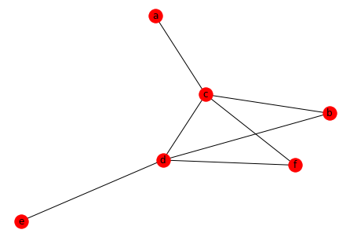

Link Prediction Task and Features¶
Link-level Prediction Tasks¶
Link-level Features¶
Overview¶
Distance-Based Features¶
import networkx as nx
alphabet = string.ascii_lowercase
G = nx.Graph()
G.add_nodes_from(["a","b","c","d","e","f","g","h"])
G.add_edges_from([("a", "c"),
("b", "c"),
("b", "d"),
("c", "d"),
("d", "e"),
("d", "h"),
("e", "f"),
("e", "g"),
])
nx.draw(G, with_labels=True, node_color="r")
---------------------------------------------------------------------------
NameError Traceback (most recent call last)
<ipython-input-1-128a41d278d2> in <module>
1 import networkx as nx
2
----> 3 alphabet = string.ascii_lowercase
4 G = nx.Graph()
5 G.add_nodes_from(["a","b","c","d","e","f","g","h"])
NameError: name 'string' is not defined
node_pairs = [('b','h'), ('b','e'), ('a','b'), ('b','g'), ('b','f')]
for s, t in node_pairs:
print(f"S_{s}{t} = {nx.shortest_path_length(G, s, t)}")
S_bh = 2
S_be = 2
S_ab = 2
S_bg = 3
S_bf = 3
Local Neighborhood Overlap¶
import networkx as nx
G = nx.Graph()
G.add_nodes_from(["a","b","c","d","e","f"])
G.add_edges_from([("a", "c"),
("b", "c"),
("b", "d"),
("c", "d"),
("c", "f"),
("d", "e"),
("d", "f"),
])
nx.draw(G, with_labels=True, node_color="r")

print(f"common neighbors of `a` and `b`: {list(nx.common_neighbors(G, 'a', 'b'))}")
print(f"jaccard coefficients: {list(nx.jaccard_coefficient(G, ebunch=[['a', 'b']]))}")
common neighbors of `a` and `b`: ['c']
jaccard coefficients: [('a', 'b', 0.5)]
The Adamic-Adar index of v_1 and v_2 is defined as
$\(
\sum_{u\in N(v_1)\cap N(v_2)}\frac{1}{log(k_u)}
\)\(
where \)k_u$ represents the number of neighbors of u
For two nodes that are only connected via self-loops
print(f"Adamic-Adar index {list(nx.adamic_adar_index(G, [['a','b']]))})")
Adamic-Adar index [('a', 'b', 0.7213475204444817)])
Global Neighborhood Overlap¶
Limitation of local features¶
Katz index¶
We can use the graph adjacencey matrix to compute the number of paths between two nodes.
G = nx.Graph()
G.add_nodes_from([1,2,3,4])
G.add_edges_from([(1,2),
(1,4),
(2,4),
(3,4),
])
nx.adj_matrix(G).toarray()
array([[0, 1, 0, 1],
[1, 0, 0, 1],
[0, 0, 0, 1],
[1, 1, 1, 0]])
import numpy as np
A = nx.adj_matrix(G).todense()
beta = 0.5
n = A.shape[0]
S = np.linalg.inv(np.eye(n,n) - beta*A) - np.eye(n,n)
print(S)
[[-3.66666667 -3.33333333 -2. -4. ]
[-3.33333333 -3.66666667 -2. -4. ]
[-2. -2. -1. -2. ]
[-4. -4. -2. -5. ]]